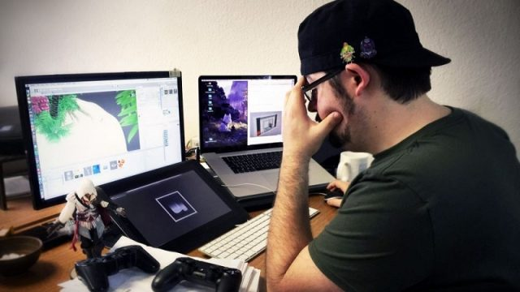

Career Interest
Ever since i started thinking about what i want and the prospect of career came up,the Technology Industry was always in my mind.I explored my interests,researching many of the job fields offered,considering the potential pros/cons and what that would mean for me. After a considerable amount of thinking, i knew a job in the technology industry was what i desired, specifically in the video game industry.
After graduating highschool ,i knew i wanted to pursue higher education and decided that the bachlor of IT degree would be where i start.I also decided to go abroad very early on and upon further deliberation, RMIT was a choice that suits my interests.As i study at RMIT i want to work towards developing a skillset that is needed to work in the industry,from the technical skill needed to create an endproduct that realizes my goal and passion, but also the cooperation and teamwork management skills needed to work in groups . As I study at RMIT I want to develop skills that will enable me to achieve my goals and work with many people so i can start working on creating games from the start.
Ideal Job
Even during the times i weighed careers for myself, i've always had the idea that a job as a video game programmer and developer is what i wanted. Ever since a relative of mine showed me a full game they made with a small team when i was a little kid, i've been inspired by how much love and effort can be put into a single game.With a job in the industry,my vision is to share the way i enjoyed playing video games and inspire people like i've been inspired myself .A position as a video game programmer requires someone to have a background in IT including various programming languages, Write and fine-tune precise computer code that controls the difficulty level of a video game,implementation of artificial intelligence, and most importantly strong communications skills with team members to incorporate their vision into the game.
